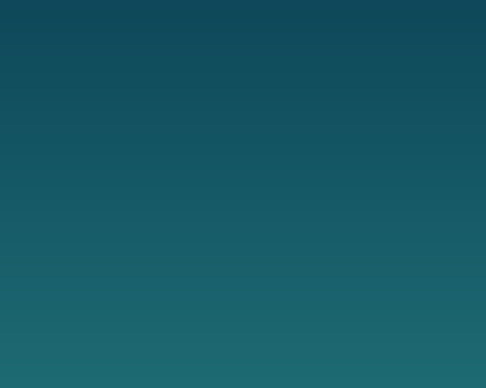
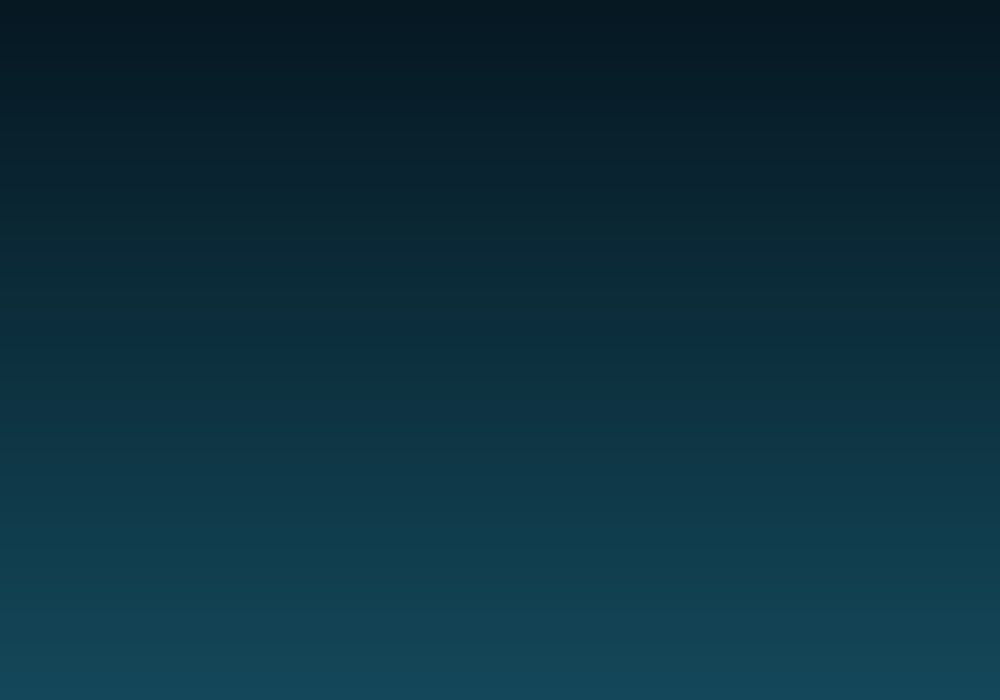
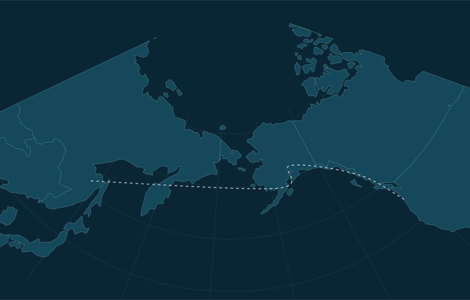
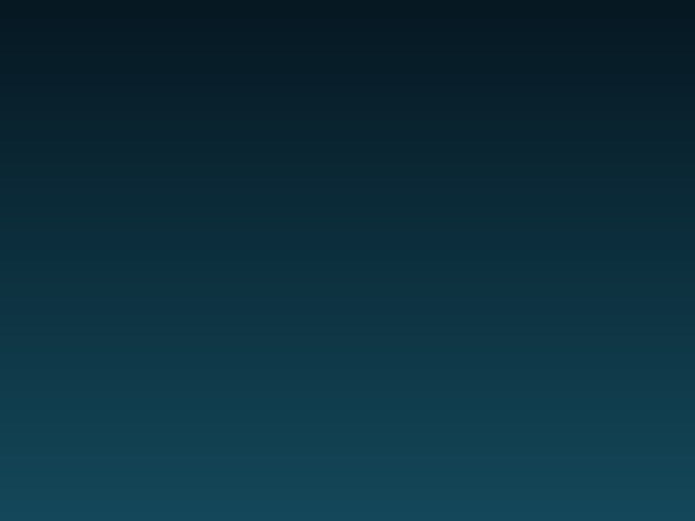
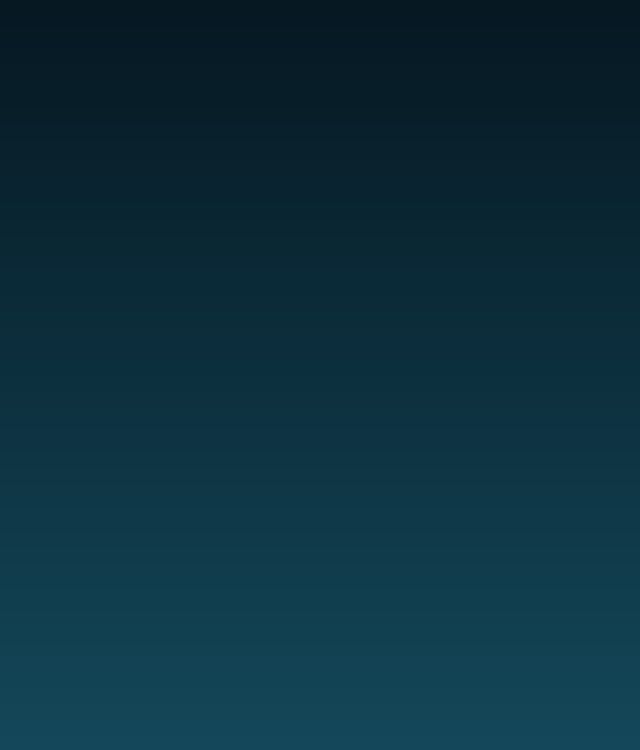
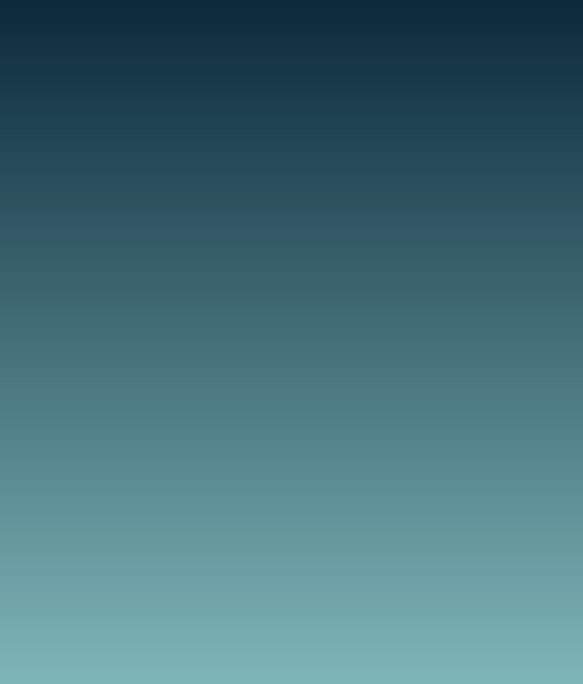
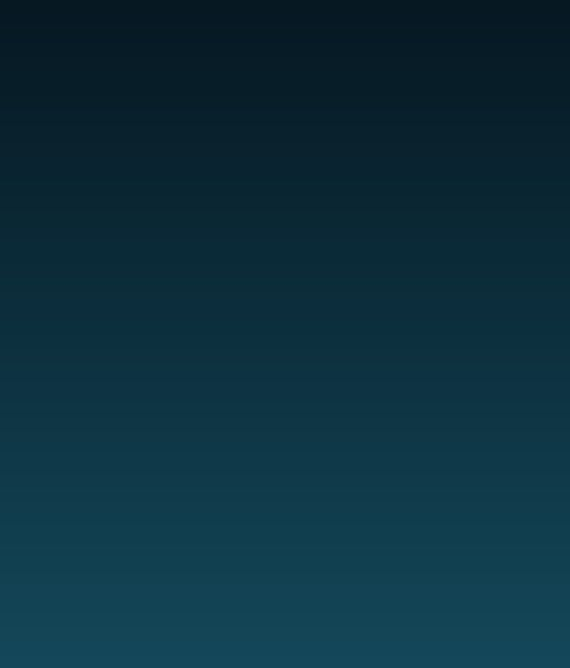
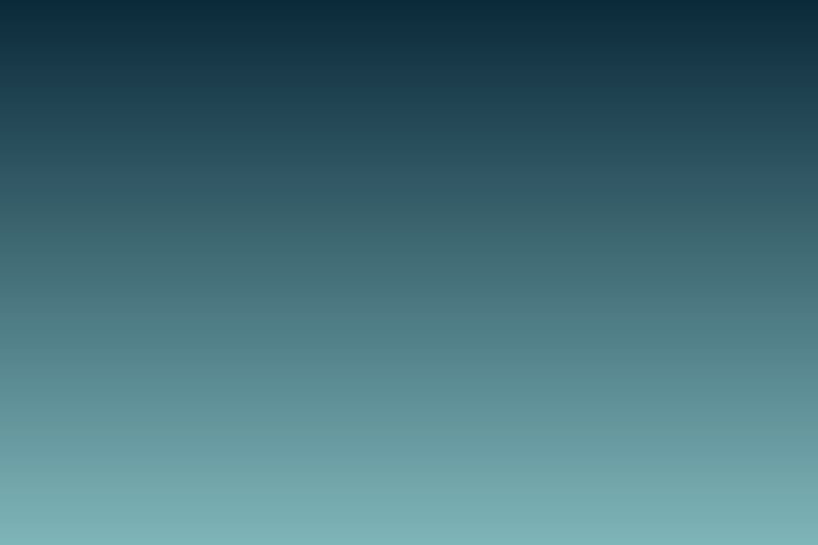

Project highlight
Preserving the Tillamook Rainforest
We’re working to protect 250,000 acres of wild land in Oregon for salmon populations, and people.
See the project →Our mission is to protect the world’s salmon strongholds: wild rivers where salmon still thrive.

salmon strongholdsFrom small tributaries to vast watersheds, we work with local partners to keep wild rivers wild.
Explore projects →
We’re working to protect 250,000 acres of wild land in Oregon for salmon populations, and people.
See the project →Forests in Oregon are under threat and our officials need to act. Ask the Board of Forestry to conserve this vital habitat.
Select a river to see the work underway. The map is stylized; locations are approximate.

Acres of habitat preserved
Rivers managed for wild fish diversity
Coalitions supported with partner organizations
As a keystone species, salmon support more than 100 types of wildlife, diverse wild rivers, and entire communities across the North Pacific.
Wild salmon support life upstream by bringing vital nutrients from the sea.
For generations, salmon have anchored the culture, food and identity of Indigenous and coastal communities.
Healthy wild runs sustain commercial, recreational and subsistence fisheries that power local economies.
Scientists, anglers and neighbors work side by side to keep rivers wild for the next generation.
Dive deeper on how and where we're protecting salmon.

Protecting one of the most important wild salmon habitats on Earth.
Read more →Defending "Mother Skeena" from mining, oil and gas, and timber industry pressure.
Read more →Protecting 250,000 acres of critical forestland in Oregon.
Read more →Working together to help coho thrive on the Oregon coast again.
Read more →Reconnecting a web of rivers that are vital for wild salmon.
Read more →Keeping a vast Alaskan wilderness roadless and dam-free for salmon.
Read more →Creating a coalition to save the world's largest salmonid.
Read more →We call the people who help us protect salmon Guardians. Here's what it means to be one.
The first immersive 3D IMAX film to put viewers in rivers and oceans alongside wild salmon on their epic annual migration.
Learn more →“Flyfishing is a portal into the natural world”
From members of our team to vital partners, explore the stories of those who help us carry out our work every day.

Fish Habitat Specialist

Salmon Watershed Scientist
Blue Ridge Timber Cutting

Heiltsuk Integrated Resource Management
Help us protect strongholds for all who rely on them by making a gift today.
Show the world that you support saving wild salmon.

Federal fisheries agencies have approved a plan to protect salmon, steelhead, and trout rivers in two Oregon state forests.
Read more →Across the province's north, First Nations leaders are driving B.C.'s biggest land conservation effort in three decades.
Read more →The Sitka Tribe of Alaska is using Salmon Vision technology to sustain key fisheries on Redoubt Lake.
Read more →Can't find what you're looking for? Our team is happy to help.
Contact us →A wild river where salmon still thrive. Protecting these places is the heart of our mission.
Across the North Pacific, from California to Alaska to Russia.
35.7 million acres of habitat across 89 rivers managed for wild fish diversity.
Donate, subscribe to the Guardian Newsletter, attend an event or take action for wild rivers.